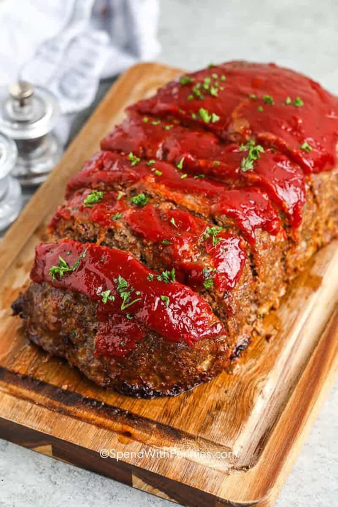

Meatloaf

Super Easy Meatloaf
This recipe is very quick, and tastes amazing.
Ingredients
- 1 1/2 lbs. ground beef
- 1 egg
- 1 cup dried bread crumbs
- 1 onion, finely chopped
- 1 cup milk
- salt and pepper to taste
- 1/3 cup ketchup
- 2 tablespoons brown sugar
- 2 tablespoons prepared mustard
Steps
- Preheat the oven to 350 degrees F (175 degrees C). Lightly grease a 9x5-inch loaf pan.
- Combine ground beef, onion, milk, bread crumbs and egg in a large bowl; season with salt and pepper. Transfer into prepared loaf pan.
- Mix ketchup, brown sugar, and mustard together in a small bowl until well combined; pour over meatloaf and spread it evenly over the top.
- Bake in the preheated oven until no longer pink in the center, about 1 hour.
go back